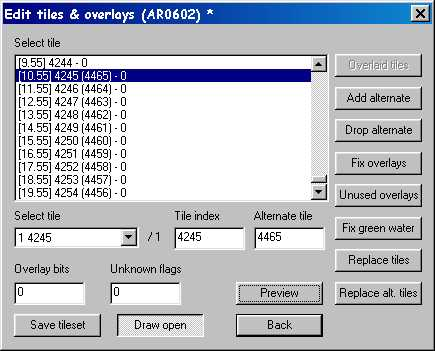
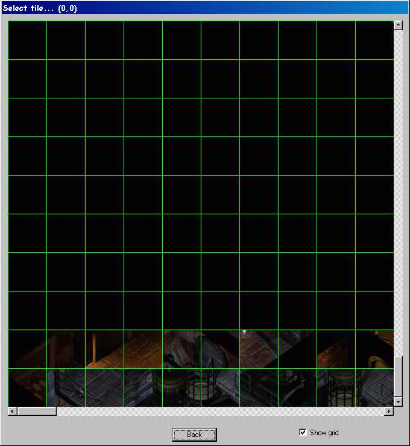
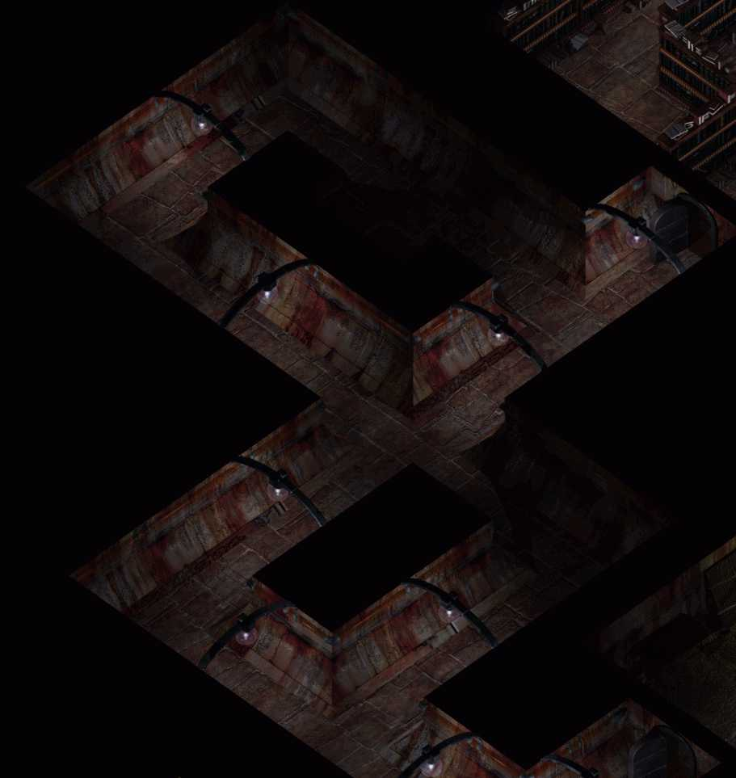
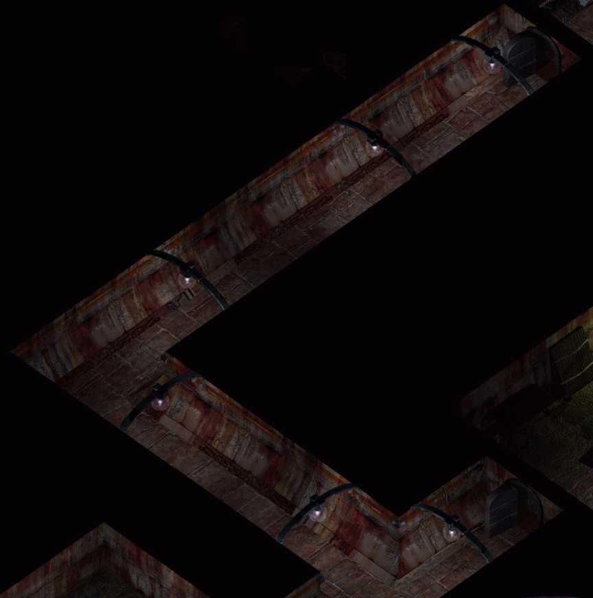
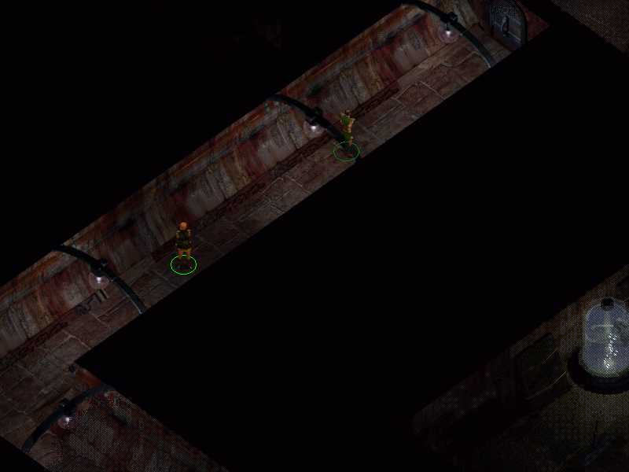
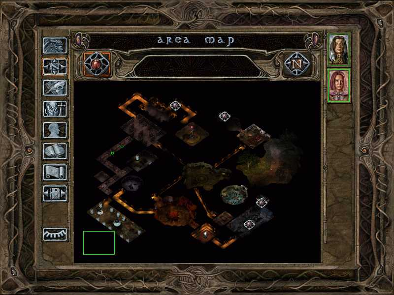

Contributor: Smoketest
| Version History |
| Introduction |
| Modifying Jon's Dungeon |
Version History
1.0 Initial release 1.1 Clarification of the cleanup function Introduction
I've been trying to modify the map of AR0602 in BG2, the level of Jon's dungeon we all start out on. Specifically, I wanted to simplifiy the goblin hallway en-route from the Sewage Golem's room to the Library by removing two elbows and turning it into a simple L shape. It should have been easy, except Bioware's main tilesets have 'alternate' tiles attached to them (stored after the main map tiles) and while exporting, DLTCEP will clip off any tiles that don't form a complete row. This is bad because these alternate tiles are mostly used for displaying closed doors. Thankfully I found a roundabout way to get the job done without losing any tiles and without damaging the doors. Here's a brief step by step list of what I did. (I'll use AR0602 since that was what I was working on.)
Unless you've changed your browser fonts to something weird and wonderful, the conventions in this tutorial are that black is descriptive text and blue bold is action text.
Since AR0602 has extra tiles, but not enough to form a row, I needed to find a way to add enough tiles to form a complete row. AR0602 has 10 extra tiles and rows are 77 tiles across, so I need to add at least 67 tiles (if I add too many, DLTCEP will cut them off during export).
This last action is very important and will be explained later.
When all 67 tiles have alternates:
At this point the tileset is saved and should have enough extra tiles to form 58 rows, instead of the previous 57 rows, plus 10 extra tiles. Time to export the tileset for editing.
|
 Image 1 - 67 new tiles |
Now the tileset should be shown as a grid of 77 x 58 tiles.
|
 Image 2 - Guess Dimensions |
If all went well, this is what you should see at the bottom of the preview window after having DLTCEP Guess Dimensions in the TIS Editor. If only one row of alternate tiles is visible, you'll have to start over and try again. Not much fun at all.
It is important that the BMP be generated with doors drawn open, because the alternate tiles draw them closed. If you generate a BMP with doors drawn closed, you can still use the doors in the game, but they'll always be drawn closed because both the main tiles and the alternate tiles will draw them that way. (This also affects how doors are drawn in the MOS minimap when it's generated.)
At this point I used Paintshop Pro to edit the bitmap, and used cut and paste to redesign the hallway, making sure everything lined up with existing objects. If everything was done right up to this point, all of the alternate tiles should be visible across the bottom of the bitmap image. This is the original tilemap as viewed in PSP, cropped to a convenient size that focuses on the area of interest. I saw no reason for the hallway to be so complex, and I had already removed the cannon-fodder goblins that had no place in the dungeon anyway.
|
 Image 3 - The original hallway |
This is the new hallway after some careful cut n paste of hallway segments. It was a challenge getting big enough pieces without light fixtures getting in the way, but I managed. Note the abundance of darkness on each side of the hall where the old hallways used to be. When this image is imported as the main overlay, the preview screen will show this modification, as it should.
|
 Image 4 - The new hallway |
Now it's time to import the edited tiles.
DLTCEP will convert the bitmap to tile data. When that's done,
(If you want you can back up AR0602.TIS before doing this.)
If all went well, the new tileset is ready for gaming and the doors should not have been affected. (My edit didn't involve any doorways.) If you do edit doors, you'll have to update the alternate tiles so you can have open and closed doors.
If you check the alternates by clicking Edit Tiles from inside the Wed editor, you'll notice the 67 or so alternate tiles are no longer there. I suspect this is because we didn't actually use them for anything, so DLTCEP removed them when I clicked the 'Cleanup' button. That's okay though, because it got us what we wanted while they lasted: a complete tileset for editing and re-importing. Just keep in mind that if you decide to re-extract the new tileset, you'll have to re-add those alternates to create a full row.
There are still a few things left to do before this change is totally complete, but they are covered in Yovaneth's existing tutorials. Specifically, the wall groups for that section of hallway need to be removed/edited (I had fun doing this), a MOS overhead minimap reflecting the new changes needs to be created, and the Search Map needs to be updated to prevent players from walking out into black space. In this project the light map was an optional edit that I didn't need to worry about, and the height map wasn't affected.
Hopefully I didn't miss anything. It took me a few tries to get things figured out, but ultimately I got it fixed and no longer have an unnecessarily complicated hallway to travel through. (I had already removed the spawning goblins so they couldn't spawn into dead space.)
Here are my temporary main character and Imoen CTRL-J'd to the location for a quick test. By this point I have edited the wallgroups for proper dithering and edited the search map to keep the characters from leaving the area graphic boundaries.
|
 Image 5 - In the game |
|
 Image 6 - The new MOS |
This is a shot of the overhead MOS I generated based on the edited map. Note the modified hallway where the two green circles are positioned. I moved the view square out of the way so the new hall could be clearly seen.
|
Tutorial written by Smoketest. Post it where you will but please don’t take credit for what you have not written. |